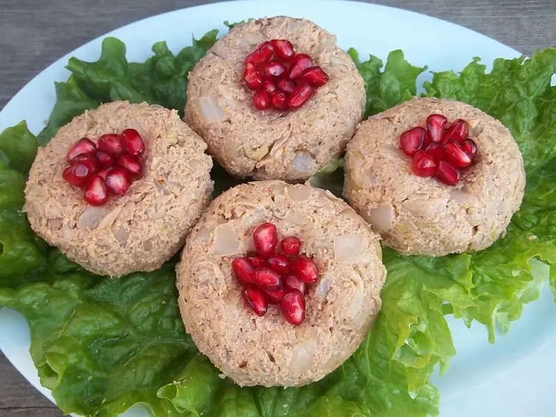

Фото: Georgian Recipes at Georgia About, CC BY 3.0

Пхали из шпината
Холодная закуска из шпината с орехами, чесноком и кинзой, шариками с гранатом
45 мин4 порц.198 ккал на порциюБ 8 · Ж 17 · У 6Кавказская кухня
Продукты на 4 порц.
- Шпинат500 г
- Грецкие орехи1 стак.
- Чеснок2 зуб.
- Кинза0,5 пучок
- Лук репчатый по желанию0,5 шт
- Хмели-сунели0,5 ч. л.
- Уксус 9%1 ч. л.
- Острый перец молотый по желанию1 щеп.
- Соль0,5 ч. л.
- Гранат по желаниюпо вкусу
Как готовить
- Опустите шпинат в кипящую подсоленную воду на 2 минуты, откиньте и сразу залейте холодной водой.
- Отожмите шпинат руками как можно сильнее, лишняя вода испортит форму.
- Измельчите в блендере орехи, чеснок, кинзу, лук, хмели-сунели и острый перец до густой пасты.
- Мелко порубите шпинат ножом, смешайте с ореховой пастой, уксусом и солью.
- Сформуйте шарики размером с грецкий орех, сверху сделайте ямку и вложите зёрна граната.
- Уберите в холодильник на 30 минут, чтобы вкус соединился.
Совет. Так же делают пхали из свёклы: 2 отварные свёклы натрите, отожмите сок и смешайте с той же ореховой пастой. Вместо уксуса подойдёт гранатовый сок.